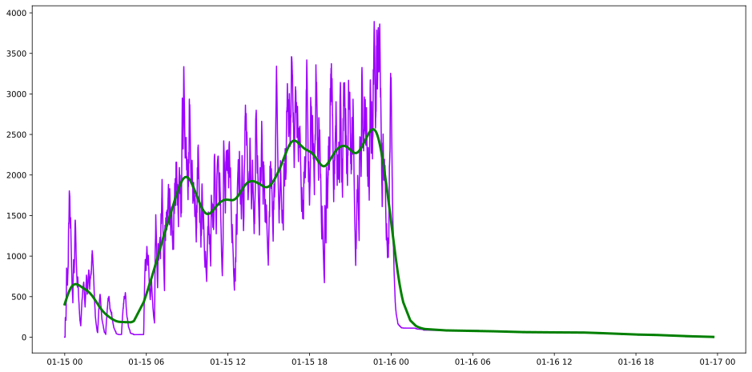
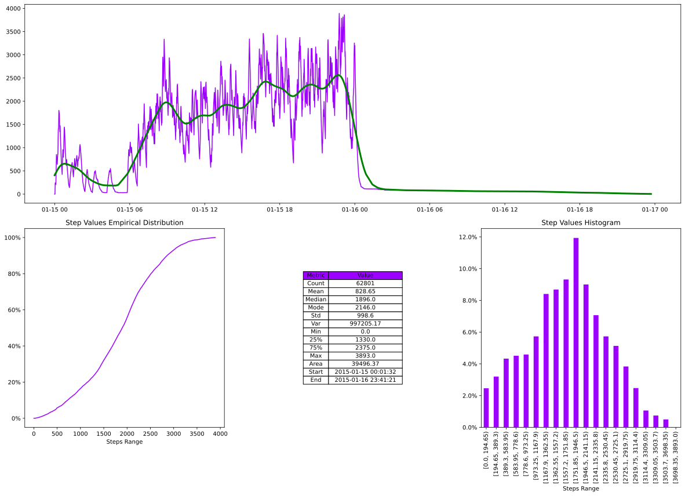
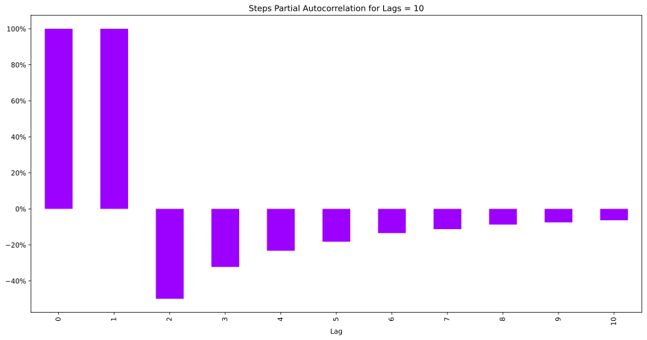

Uber Trips¶
[1]:
import sys
sys.path.insert(0, r"..//..//")
import matplotlib.pyplot as plt
import numpy as np
import pandas as pd
from hotstepper.Steps import Steps
import warnings
warnings.filterwarnings("ignore")
Read the data from a csv into a dataframe so we can have a quick look at what we have.
[2]:
df_uber = pd.read_csv(r'..//..//data//taxi data.csv',parse_dates=['tpep_pickup_datetime','tpep_dropoff_datetime'])
#df_uber['tpep_pickup_datetime'] = df_uber.tpep_pickup_datetime.apply(lambda x: x.tz_localize(None))
#df_uber['tpep_dropoff_datetime'] = df_uber.tpep_dropoff_datetime.apply(lambda x: x.tz_localize(None))
df_uber.head()
[2]:
| VendorID | tpep_pickup_datetime | tpep_dropoff_datetime | passenger_count | trip_distance | pickup_longitude | pickup_latitude | dropoff_longitude | dropoff_latitude | fare_amount | tip_amount | total_amount | |
|---|---|---|---|---|---|---|---|---|---|---|---|---|
| 0 | 2 | 2015-01-15 19:05:39+00:00 | 2015-01-15 19:23:42+00:00 | 1 | 1.59 | -73.993896 | 40.750111 | -73.974785 | 40.750618 | 12.0 | 3.25 | 17.05 |
| 1 | 2 | 2015-01-15 19:05:39+00:00 | 2015-01-15 19:32:00+00:00 | 1 | 2.38 | -73.976425 | 40.739811 | -73.983978 | 40.757889 | 16.5 | 4.38 | 22.68 |
| 2 | 2 | 2015-01-15 19:05:40+00:00 | 2015-01-15 19:21:00+00:00 | 5 | 2.83 | -73.968704 | 40.754246 | -73.955124 | 40.786858 | 12.5 | 0.00 | 14.30 |
| 3 | 2 | 2015-01-15 19:05:40+00:00 | 2015-01-15 19:28:18+00:00 | 5 | 8.33 | -73.863060 | 40.769581 | -73.952713 | 40.785782 | 26.0 | 8.08 | 41.21 |
| 4 | 2 | 2015-01-15 19:05:41+00:00 | 2015-01-15 19:20:36+00:00 | 1 | 2.37 | -73.945541 | 40.779423 | -73.980850 | 40.786083 | 11.5 | 0.00 | 13.30 |
[ ]:
[3]:
uber_steps = Steps.read_dataframe(df_uber,'tpep_pickup_datetime','tpep_dropoff_datetime','passenger_count')
ax = uber_steps.plot()
uber_steps.smooth_plot(ax=ax,color='g',linewidth=3)
[3]:
<AxesSubplot:>

[4]:
uber_steps.summary();

[5]:
df_start = df_uber.loc[df_uber.tpep_pickup_datetime==df_uber.tpep_pickup_datetime.min()]
print(f"Pandas direct {df_start['passenger_count'].sum()}")
print(f"Step function at first {uber_steps(uber_steps.first())[0]}")
Pandas direct 8
Step function at first 8.0
[6]:
uber_steps.pacf_plot()
[6]:
<AxesSubplot:title={'center':'Steps Partial Autocorrelation for Lags = 10'}, xlabel='Lag'>

[ ]: